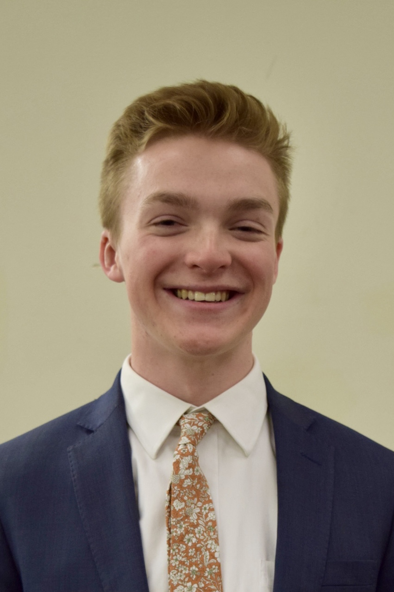

Chase B's Resume
EDUCATION
Brigham Young University – Marriott School of Business - Provo, UT
Bachelor of Science in Finance - April 2024
GPA 3.8/4.0
Member of BYU Finance Society and BYU Asset and Wealth Management Club
Thomas Jefferson High School for Science and Technology
Alexandria, VA - June 2017
Ranked #1 public high school in the U.S. for multiple years (U.S. News and World Report)
Completed year-long senior research project on genetics and plasmid engineering
EXPERIENCE
Stout - Salt Lake City, UT
Business Valuation Summer Analyst - Aug 2023 – Jun 2023
Performed financial analysis and valuation using DCF and market capitalization for over 30 businesses
Analyzed financial statements, market data, and industry trends to determine fair market value estimates
Collaborated with seasoned valuation professionals to enhance financial analysis and modeling skills
Aptive Environmental - Milwaukee, WI
Sales Representative - Aug 2021 – Apr 2021
Generated $125k in sales revenue over four-month period
Ranked in top 5% of 1,900 first year sales representatives in serviced revenue
Developed exceptional interpersonal skills through door-to-door sales training and experience
Q90 Corporation - Provo, UT
Intern, Project Manager - Apr 2021 – Jan 2021
Managed team of five on-campus interns to formulate sales campaigns and case studies
Created monthly project scope, schedule, and plan to ensure timely project deliverables
Authored research articles analyzing opportunities to grow software client base
Amazon.com, Inc. - American Fork, UT
Delivery Associate - Apr 2021 – Oct 2020
Planned effective delivery routes to meet distribution timelines
Inspected and monitored delivery vehicle and performed basic maintenance
Recruited and mentored new team members
VOLUNTEER SERVICE
The Church of Jesus Christ of Latter-day Saints - Barcelona, Spain
Volunteer Representative - Jun 2018 – Jun 2020
Supervised 180 missionaries while working directly with the mission President throughout northern Spain
Planned, organized, and taught dozens of workshops on leadership, relationship-building, and goal setting
SKILLS & INTERESTS
Spanish fluency (speaking, reading, and writing)
Eagle Scout, Boy Scouts of America
Varsity basketball team captain
Interests: Skiing, basketball, swimming, tennis, hiking, and reading
See website